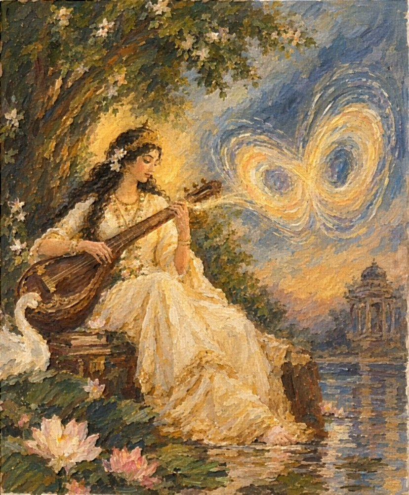
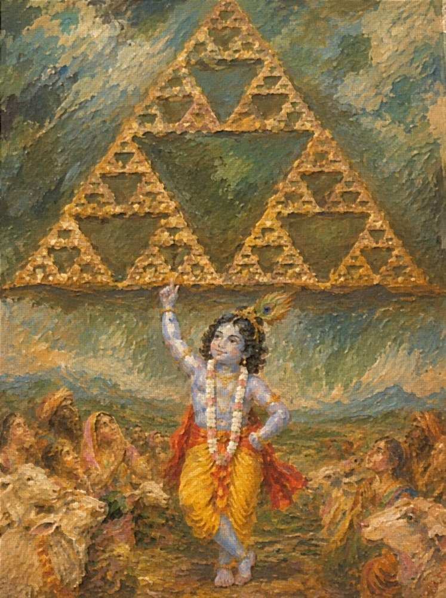
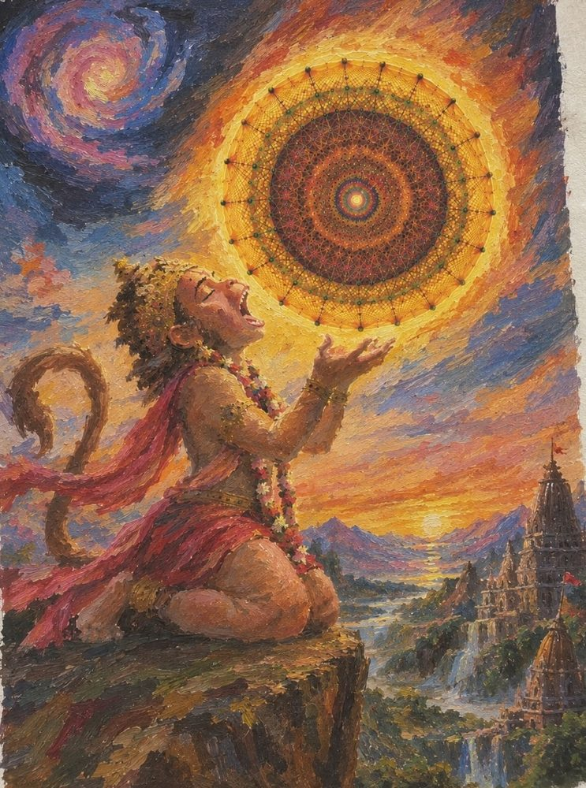
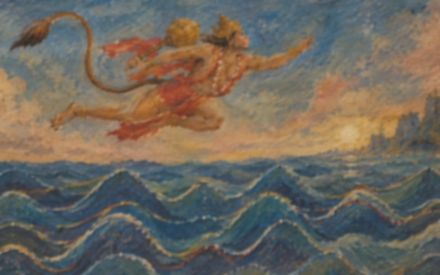
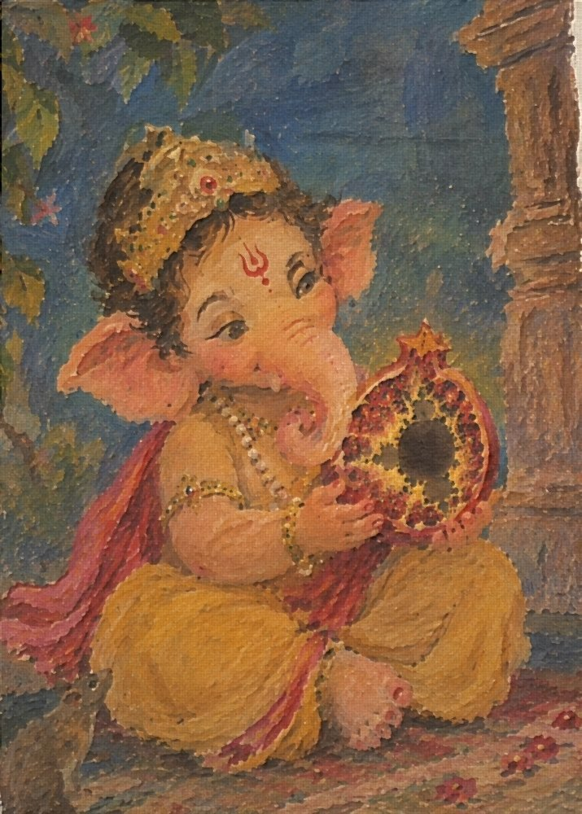
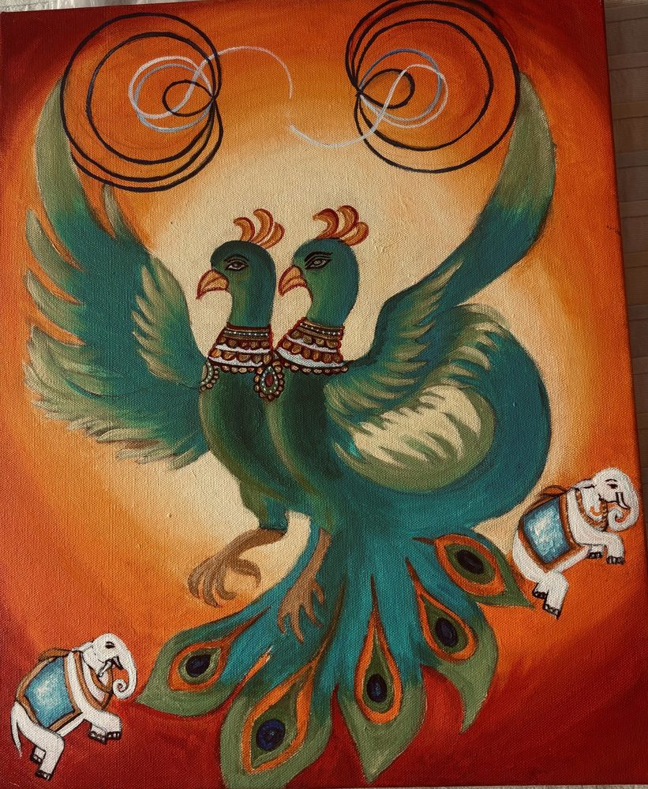
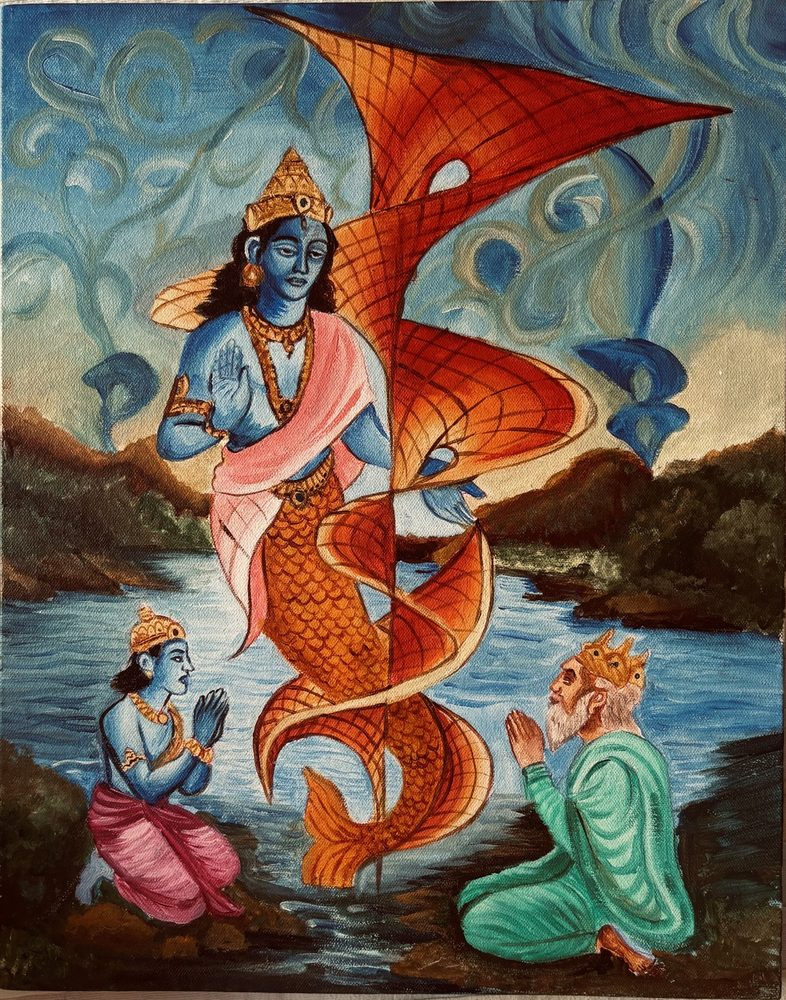
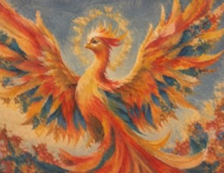

Mythematics is a series of paintings fusing abstract mathematics with Indian mythology. It is my way of embracing my paradoxes: where math meets mythology, logic meets imagination, and my seemingly contradictory interests find a language in which they can coexist. Some pieces combine hand-painted elements with digital media to preserve mathematical accuracy.
Mythematics
Artist, Mythematics - An Art Series Fusing Mathematics and Indian Mythology
2024 – Present
Goddess Saraswati x Lorenz Attractor
Goddess Saraswati, the Hindu goddess of knowledge, music, and the arts, plays her veena, an instrument associated with harmony and learning. The Lorenz attractor, a mathematical model of deterministic chaos, flows from her instrument like music made visible. Its intricate, never-repeating trajectories evoke the beauty of musical improvisation: governed by underlying rules, yet exquisitely sensitive to the smallest changes.

Bal Krishna x Sierpiński Triangle
In Hindu mythology, Krishna lifts Govardhan Hill on his little finger to protect the people of Vrindavan from Indra’s devastating storm, offering shelter to an entire community. Here, Govardhan takes the form of a Sierpiński triangle, a fractal formed by repeating a simple geometric pattern at progressively smaller scales. Its self-similar structure echoes the idea that the same mathematical rules can create complexity across different scales, while its many interlocking spaces evoke the shelter Krishna provides.

Bal Hanuman x E₈ Root System
In Hindu mythology, young Hanuman mistakes the rising Sun for a ripe fruit and leaps into the sky to seize it, displaying his extraordinary strength and boundless curiosity. This painting reimagines the Sun as the E₈ root system, one of mathematics’ most remarkable structures: a highly symmetrical configuration of 240 vectors in eight-dimensional space. Its intricate geometry radiates from the centre like a celestial source of energy, connecting Hanuman’s audacious leap towards the Sun with the hidden mathematical order underlying the universe.

Lord Hanuman x Fourier Series
In the Ramayana, Hanuman makes an extraordinary leap across the ocean to Lanka in search of Sita, overcoming the vast expanse separating him from his destination. This painting renders the ocean through a Fourier series, a mathematical method that represents complex waves as combinations of simpler sine and cosine waves. The overlapping curves capture the ocean’s changing rhythms, transforming its turbulence into a pattern that can be understood mathematically. As Hanuman surmounts the seemingly impossible distance, the Fourier series reveals how even the most complex waves can be understood through simpler components.

Lord Ganesh x The Mandelbrot Set
In the story of the divine fruit, Ganesha wins through wisdom rather than speed, recognising a profound truth hidden within an ordinary-looking journey. Here, the magical fruit takes the form of the Mandelbrot set, whose intricate patterns reveal seemingly infinite complexity within a simple mathematical rule. Just as Ganesha discovers that an entire world can be contained within the love of his parents, the Mandelbrot set reveals extraordinary worlds within its endlessly intricate boundaries.

Gandaberunda x Riemann Zeta Function
The Gandaberunda, a mythical two-headed bird in Indian tradition, symbolises immense strength, vigilance, and the ability to confront opposing forces as one. Paired with the Riemann zeta function, a mathematical object deeply connected to the distribution of prime numbers, its two heads evoke the tension between apparent disorder and hidden structure. Just as the zeta function reveals profound patterns beneath the seemingly unpredictable sequence of primes, the Gandaberunda embodies the idea that opposing perspectives can coexist within a greater unity.

Matsya x Riemann Surface
Matsya, the fish avatar of Vishnu, appears in Hindu mythology to guide humanity and preserve life through a great flood. Paired with a Riemann surface, a mathematical structure that connects multiple branches of a complex function into one continuous surface, Matsya becomes a symbol of navigating unfamiliar worlds. Just as Matsya guides life through turbulent waters, the Riemann surface reveals continuity beneath apparent complexity, transforming how we understand the relationships between different mathematical possibilities.

Phoenix x Fractal Geometry
The phoenix, rising anew from its ashes, has long symbolised resilience and the courage to begin again. Set against the intellectual spirit of Chicago, it becomes a study in fractal geometry: feathers branching into intricate patterns, each echoing the structure of the whole. Just as fractals generate infinite complexity from simple rules, the phoenix transforms each ending into the beginning of something new.